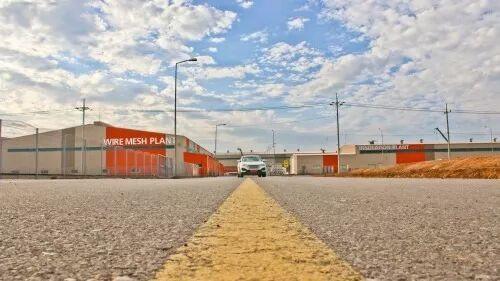
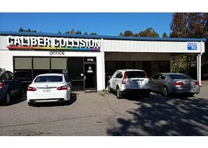

1
撞车
上上周周末的时候，我在一条路况良好的大路上开车。湾区正下着不多见的不大不小的雨，我正听着车内的聊天。不知不觉车速被我加到了90英里/小时，车也挪到了最左边的快车道，一切都跟往常一样平常。
在车子撵过一个小水坑的时候，我的车轮突然打滑了。车轮向左边偏去。我下意识地向右边打方向盘，但是车子已经失去了控制。车子的主要速度还是向前的，稍稍向左偏一点，但是车头已经偏向了左侧。就这样子侧滑着车头撞在了路中间的隔离水泥桩上。
撞完之后向前的惯性还没有结束，车轮可能是因为速度减下来了，也恢复了抓地力，车头就这样转回到了向前的方向，最终刹在了最左侧的紧急停车道。
车子停了以后倒是还发动着，因为撞击不太严重，安全气囊并没有弹出。不过这样的事故还是真的很吓人。我第一反应是检查有没有人受伤，幸好车上的乘客都系了安全带，没有人有受伤，只不过乘客的眼镜都飞了出去。
我把车子熄火后，下了车看了一下。车头的塑料板什么的都撞得歪歪扭扭的，车头的金属部分倒是似乎没有什么问题，也没看到什么漏液的情况。
撞车以后
撞了以后首先的反应是庆幸运气好，居然出了这么大的事故人都没事。接下来就是开始给保险公司打电话。电话还没接到人工服务呢，就有道路巡逻的人停下车，问我们有没有人受伤之类的。在听到没有人受伤以后，她就表示要叫警察过来封锁这部分的道路，以免我们被后面的车子追尾（可能怕还有别的车也在那边出事故吧）。
又过了大约20分钟，交警来了，问我们的车还能不能开了。我回车上试了一下，还是可以的，只不过车子前面撞歪的塑料板跟轮胎有点摩擦，于是就在警车的保护下一路开下了高速公路。
下了高速公路以后警察问我们有没有受伤，然后问我要不要叫拖车，要不要提交报告什么的。我表示没有受伤，既然车子还能开就不用拖车了，然后报告的话警察告诉我要是不报的话可以少一个坏记录，于是我就没报。交代完这些警察就走了，似乎对他来说小事一桩。
接下来我就查了一下附近的修车店，然后一路小心翼翼地把车开到了修车店门口。开到了以后修车店表示他们这种情况不休，修这种的叫做body shop，不过周末都是关门的。不过修车店的人告诉我们可以把车钥匙从门口塞进去，留下联系方式，之后body shop的人会周一的时候处理的，于是我们就照做了。

03
保险公司
在离开之前我把车子周围好好地拍了很多照片，然后用保险公司的APP提交了索赔的申请，上传了照片。保险公司似乎周末大部分的人是不上班的，电话打了好久才终于转接到一个活人，说是在未来的一周以内他们会派人去auto shop查看车子的受损情况。
后来到了周一，我收到一封邮件，说是保险公司的人查看了我提交的车子的受损照片，决定这车不能修了，准备直接赔给我这辆车的所有剩余价值（所谓的total the car）。
我听到了以后还是满沮丧的，觉得开了这么久的车说没就没了。而且保险公司赔了这么多钱，今后的保费肯定要涨一大截。不过事情都这样了也没办法。保险公司的人还说他们需要我去把车上剩下的东西都拿走，之后他们会把车子取走。
当周的周五，我就跑去把车上剩下的东西拿走了。车上剩下的东西其实没啥，就一个篮球，一个自行车架，还有一些鞋子啥的，都在后备箱。车子里的东西早就都被清空了，毕竟平时车子停在三番的街道上，要是车子里有点什么值钱的东西，车窗动不动就要被砸碎。
04
复盘
经历了这次幸运的事故，我觉得下一次不一定就会有这么好的运气了。要是当时不是向左侧滑，而是向右侧滑，甚至如果当时后面有另外一辆车直接撞上来，说不定就会造成人员的伤亡，那就不是这样简单的损失了。
为此我怀着悔过的心情，仔细地复盘这一次事故。
首先这次的首要错误在于车速过快。90 英里/小时相当于144千里/小时，不管怎么说属于过快的驾驶了。平时驾驶的时候不注意，常常开得这么快以为没事，不代表这样开可以一直没事。
其次是没有注意雨天小心驾驶。雨天路滑，本来就应该降低驾驶的速度。而且车子在高速驾驶的时候，如果路上的积水较多，是有可能造成轮胎的排水量小于水的累积速度的。这个时候在轮胎的表面会形成一层水膜，会使得轮胎的抓地力瞬间消失。
我当时车辆突然失去控制就是这种情况，突然开入一个小水坑，导致轮胎上的水一下子变多，再加上速度很快，就瞬间打滑了。
而这次幸运的因素之一，是车子相对还是比较新的，抗撞的能力还可以。当然要是开的车子更大更安全，可能可以抵御将来万一出现更加严重的事故。
05
换车
心有余悸之下，这次换的新车只有一个标准，要安全，要稳定。
我仔细地调查了市面上的车子。从撞击的安全角度，似乎有很多车子满足选择，一般的规律是越大越安全。
从稳定的角度，尤其是预防打滑的角度，似乎四驱的车要比两驱更加好。
从安全设备的角度，新款的车子往往更多的装了各种警报以及辅助驾驶设备，会在出现极端情况的时候更安全。
综合上述条件，我决定买一辆四驱的新款大车。似乎斯巴鲁的相对新款的suv是满足以上条件的最便宜的车子，于是我准备下一辆车就买一辆大致满足条件的二手车。
鉴于上次买车的时候从Beepi这样的网上购车平台得到了很好的购物体验，这次我还是准备从这样的平台买一辆车。不过我之前用的Beepi这个平台已经倒闭了，于是我就分别调查了现在还开着的shift，carvana以及vroom。相对来说shift的服务似乎蛮好的，不过carvana车最多，vroom则是感觉车的选择很少，被前两家平台甩开一大截。
06
总结
开车还是要注意安全，以后千万要慢点开。开高速的时候要熟练掌握使用巡航，这样就不容易开快了。还有事故总是难免的，有钱的话还是换成安全一点的车吧，小车真的太危险了。